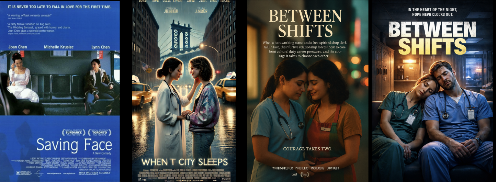
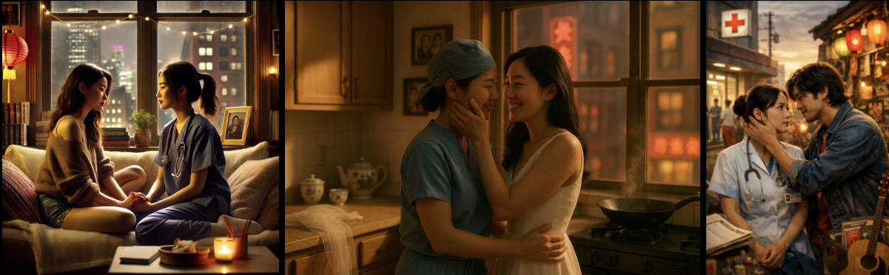

Close-Up: Saving Face
Posters

Here is the poster series inspired by Saving Face, showing the original poster (left), a poster for a Lesbian film in the chain of inspiration generated by DALL-E's legacy model, and one by GPT-5, and finally a poster generated by GPT-5 in response to a request for a poster w/o the mention of Lesbian.
Alice Wu's 2004 film is set in NYC/Queens. As Wu's films do more than once (also see: The Half of It), a queer protagonist's sexual orientation or budding relationship is explored alongside a non-romantic relationship, with the latter constituting the film's primary arc.
In Saving Face, that relationship is a mother-daughter relationship. In this way, Wu interrogates assumptions about the exclusivity and salience of romance as the sole center of queer storytelling. The original poster shows the film's main characters, the mother and daughter, without identifying them as mother and daughter.
The Dall-E-generated poster loses the complexity of the original and the relationship depicted, and instead centers the romance. The generated image also collapses the deliberate use of distance between the characters in the original, but it retains the film's setting, New York (now we're on the street in Dumbo, not Flushing, and not on public transport). The new rendering also retains the protagonist's profession as a doctor — see labcoat and stethoscope. Whether the protagonist's racial identity has been carried into this inspiration is uncertain — the two women have definitely turned into less-defined Barbie-molded beings, as this older Dall-E model is prone to doing, which can be read in several ways.
The newer model's (GPT-5) versions also retain the profession in healthcare and, in the non-Lesbian version, extend it to include both protagonists; the background hints at an urban setting, although where exactly we are has been deemphasized. Instead of relying on a defined setting to communicate context in the Lesbian version, a few light fields set the mood. It is evening. Most crucially, the women are now no longer Barbie clones but young women of uncertain, non-white racial identity. This shift in what the model proposes as the default woman is one indication of the mitigation processes at work between these image generation models. Finally, the way they are positioned toward each other, the mirror posture of affection, telegraphs the "Lesbian" film I asked for.
"Courage takes two," as a tagline hints at an external obstacle the protagonists will have to take on together. From the social connotations the original title Saving Face carried, which implied a falling short of expectation the women's social circles and family's put on them and an attempt to regain approval, we moved to a location-centered title and then, in the final version, to a work-related title that removes nuance and amplifies stock notions about working in a hospital, especially the exhaustion communicated by the two protagonists in scrubs leaning on each other.
In this final straight version, the racial, queer, social, and cultural specificity all fell by the wayside, and the chain of inspiration revealed the algorithms' center of gravity. The specificity present in the original hasn't been replaced with choices of equal value; it has been flattened into a most generic hospital rom-com, centering white Hallmark-esque protagonists.
When we look at this final poster in the series in relation to its source of inspiration, we're no longer untangling meaning or finding theories to explain the composition; we're not interpreting layers of subtext between title and image. Every pixel has been filled by the algorithm's generic certainty. Not much demands our participation. We are familiar with the story the image proposes. We're not participating in making meaning; we're swallowing slop.
Stills and Images

To destabilize the rather definitive pronouncement in response to the posters above, we can look at the stills and images the models produced, inspired by Saving Face. Here, the urban environment and the legibility of the figures as Asian are maintained throughout. Additionally, each version, in its own way, drops unsubtle hints at the cultural context. Paper lanterns do the bulk of this work in Dall-E's version on the left and also in the "straight" GPT-5 version on the right. A wok and a tea set, along with street signs outside, fulfill that function in the center image.
Two other aspects are noteworthy in this series: the telltale height difference between characters, evident throughout the images. Whereas women are mirror images of each other and come in matching heights, in depictions of straight couples, the man is, of course, taller. The glance of intimacy between the characters, therefore, shifts from the horizontal to the diagonal. The hand and arm placement often follows this trajectory. The middle image here offers an exception.
In this series, the migration of the colors blue and white, along with the coding of gender dynamics, is also interesting. In Dall-E's version, we most clearly see a relation to the original. Although the tell-tale Barbie aesthetic defines the characters, these two could be read as stylized renderings of Vivian (the dancer) and Wil (the doctor) in the original. In GPT-5's version at the center, the model instead carried over the presence of the wedding dress, including a veil on the counter. In the film, the wedding dress is part of the mother's storyline. The middle image builds on the contrast between scrubs and gown, and the straight version doubles down on the importance of costume in communicating dynamics between characters. The scrubs become more like a nurse's dress, and the color blue shifts to the man's jacket. The dynamic between these two is legible as more traditional, and we can now read her devotion to care over her competence as a doctor, and his artistic inclination (see the guitar), which will, no doubt, teach her that she, too, is worthy of being taken care of. Each one of these two characters brings their own side of the street, hospital vs. colorful and festive street, to the meeting of fate, and in this story, colliding worlds will find a way to transcend difference by proposing a straight symbiosis.